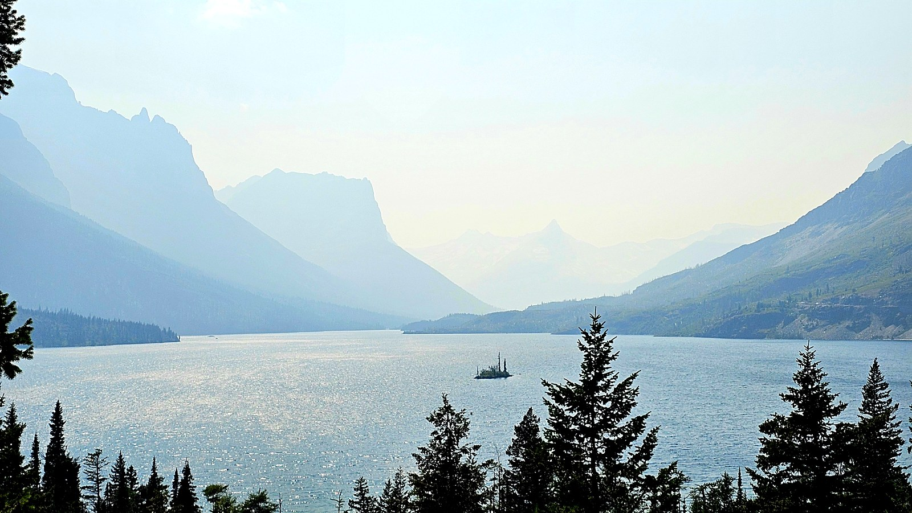
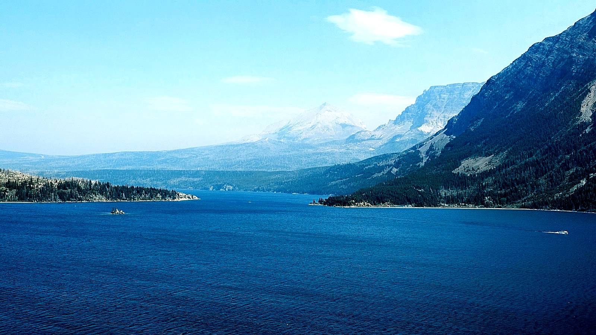
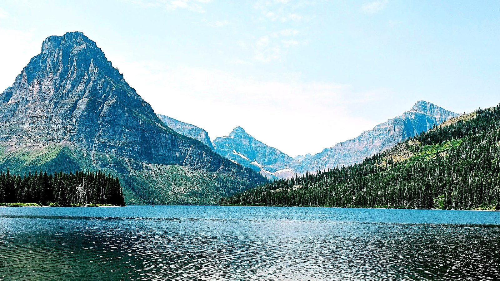
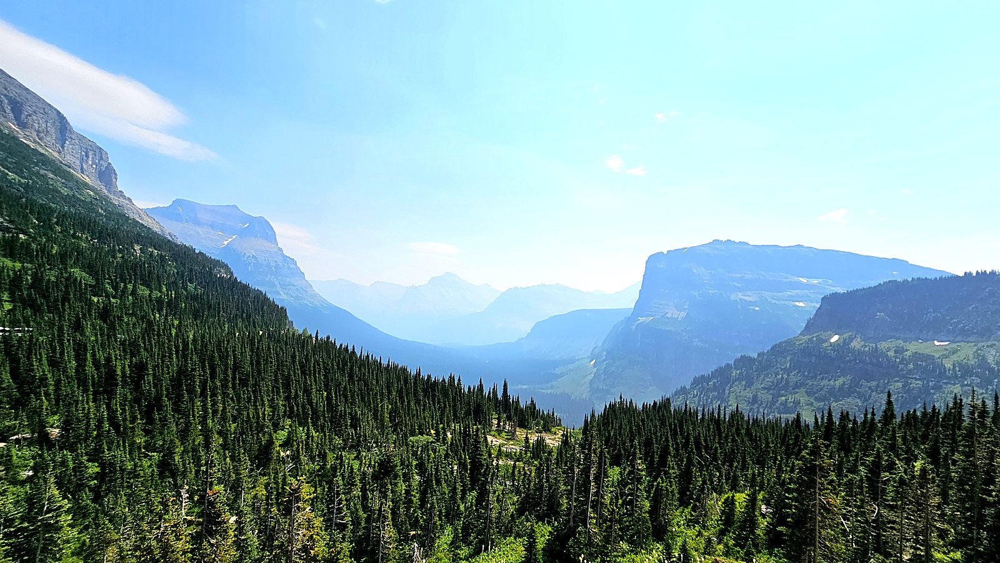
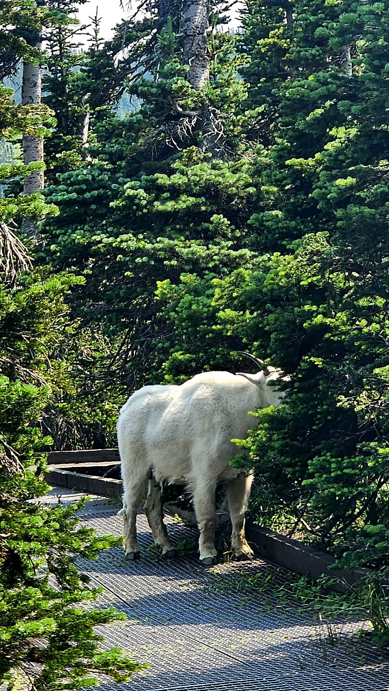
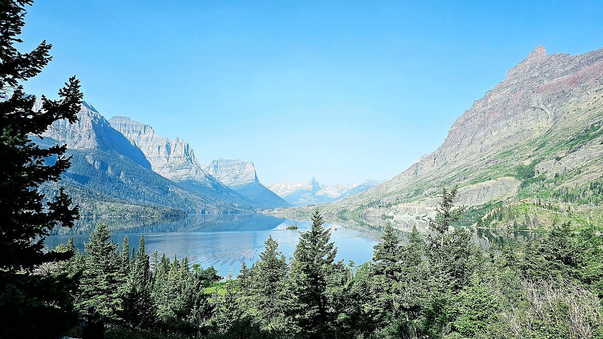

Glacier National Park
Many Glacier has a quiet, old-fashioned beauty: historic lodges, still lakes, and peaks rising right behind them. That feeling stayed with us all the way along Going-to-the-Sun Road. We had not planned for the smoke. Haze from Canadian wildfires softened every ridgeline into pale layers, and on some days the far shore of Lake McDonald disappeared completely. When the air cleared, even for an hour, the views felt like a gift.





